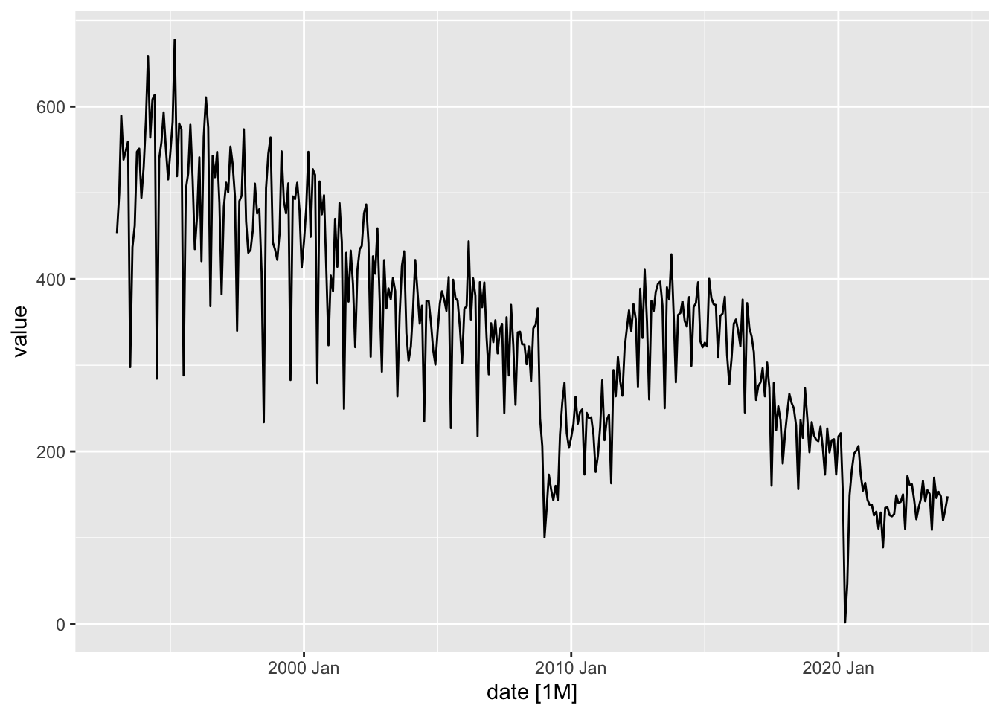

Code
library(tidyverse)
library(fpp3)
library(tswge)“You can observe a lot just by watching”
Yogi Berra
library(tidyverse)
library(fpp3)
library(tswge)Plots allow us to identify:
Patterns
Unusual observations
Changes over time
Relationships between variables.
Filter the US data from global_economy
us_economy <- global_economy %>%
filter(Country == "United States")
print(us_economy)# A tsibble: 58 x 9 [1Y]
# Key: Country [1]
Country Code Year GDP Growth CPI Imports Exports Population
<fct> <fct> <dbl> <dbl> <dbl> <dbl> <dbl> <dbl> <dbl>
1 United States USA 1960 5.43e11 NA 13.6 4.20 4.97 180671000
2 United States USA 1961 5.63e11 2.30 13.7 4.03 4.90 183691000
3 United States USA 1962 6.05e11 6.10 13.9 4.13 4.81 186538000
4 United States USA 1963 6.39e11 4.40 14.0 4.09 4.87 189242000
5 United States USA 1964 6.86e11 5.80 14.2 4.10 5.10 191889000
6 United States USA 1965 7.44e11 6.40 14.4 4.24 4.99 194303000
7 United States USA 1966 8.15e11 6.50 14.9 4.55 5.02 196560000
8 United States USA 1967 8.62e11 2.50 15.3 4.63 5.05 198712000
9 United States USA 1968 9.42e11 4.80 16.0 4.94 5.08 200706000
10 United States USA 1969 1.02e12 3.10 16.8 4.95 5.09 202677000
# ℹ 48 more rowsPlot the US GDP
us_economy |> autoplot(GDP) +
labs(title = "Nominal GDP, the US ",
subtitle = "",
y = "Nominal GDP (trln US$)")global_temp<- tibble(
Year = 1850:2009,
Temperature = hadley
)
global_temp<- global_temp|>
as_tsibble(index=Year)
global_temp|>
autoplot(Temperature)pattern exists when there is a long-term increase or decrease in the data.
pattern exists when a series is influenced by seasonal factors (e.g., the quarter of the year, the month, or day of the week).
pattern exists when data exhibit rises and falls that are not of fixed period
Differences between seasonal and cyclic patterns:
library(fredr)
fredr_set_key("33223ed79fd61ea6915872b9a2cc2256")
car_prod <- fredr(
series_id = "DAUPNSA"
)
car_prod<- car_prod|>
mutate(date = yearmonth(date)) |>
as_tsibble(
index = date
)car_prod|>autoplot()Plot variable not specified, automatically selected `.vars = value`
Use gg_season() to plot the data against the individual “seasons”
car_prod|>
gg_season()Plot variable not specified, automatically selected `y = value`aus_production |>
filter(year(Quarter) >= 1980) |>
autoplot(Electricity) +
labs(y = "GWh", title = "Australian electricity production")
us_employment |>
filter(Title == "Retail Trade", year(Month) >= 1980) |>
autoplot(Employed / 1e3) + geom_point() +
labs(y = "Million people", title = "Retail employment, USA")us_employment |>
filter(Title == "Retail Trade", year(Month) >= 1980) |>
gg_season()+
labs(y = "Million people", title = "Retail employment, USA")Plot variable not specified, automatically selected `y = Employed`#install.packages('USgas')
library(USgas)
head(us_total) year state y
1 1997 Alabama 324158
2 1998 Alabama 329134
3 1999 Alabama 337270
4 2000 Alabama 353614
5 2001 Alabama 332693
6 2002 Alabama 379343us_tsibble <- us_total |>
as_tsibble(index=year, key=state)
# Draw CA and ME gas consumption over time
us_tsibble |>
filter(state %in% c("California","Maine")) |>
autoplot(y/1e3) +
labs(y = "billion cubic feet")un_claims <- fredr(
series_id = "CCNSA"
)
un_claims<- un_claims|>
mutate(date = yearweek(date)) |>
as_tsibble(
index = date
)un_claims|>autoplot()+
labs(title = "Continued Claims ",
subtitle = "Insured Unemployment",
y = "Number")Plot variable not specified, automatically selected `.vars = value`un_claims|>
gg_season()Plot variable not specified, automatically selected `y = value`vic_elec # A tsibble: 52,608 x 5 [30m] <Australia/Melbourne>
Time Demand Temperature Date Holiday
<dttm> <dbl> <dbl> <date> <lgl>
1 2012-01-01 00:00:00 4383. 21.4 2012-01-01 TRUE
2 2012-01-01 00:30:00 4263. 21.0 2012-01-01 TRUE
3 2012-01-01 01:00:00 4049. 20.7 2012-01-01 TRUE
4 2012-01-01 01:30:00 3878. 20.6 2012-01-01 TRUE
5 2012-01-01 02:00:00 4036. 20.4 2012-01-01 TRUE
6 2012-01-01 02:30:00 3866. 20.2 2012-01-01 TRUE
7 2012-01-01 03:00:00 3694. 20.1 2012-01-01 TRUE
8 2012-01-01 03:30:00 3562. 19.6 2012-01-01 TRUE
9 2012-01-01 04:00:00 3433. 19.1 2012-01-01 TRUE
10 2012-01-01 04:30:00 3359. 19.0 2012-01-01 TRUE
# ℹ 52,598 more rowsvic_elec |> autoplot()Plot variable not specified, automatically selected `.vars = Demand`
vic_elec |> gg_season(Demand)
vic_elec |> gg_season(Demand, period = "week")
vic_elec |> gg_season(Demand, period = "day")us_employment |>
filter(Title == "Retail Trade", year(Month) >= 1980) |>
gg_subseries()+
labs(y = "Million people", title = "Retail employment, USA" )+
aes(color=Title)Plot variable not specified, automatically selected `y = Employed`us_employment |>
filter(Title %in% c("Retail Trade", "Mining and Logging", "Professional and Business Services", "Education and Health Services"), year(Month) >= 1980) |>
autoplot()+
labs(y = "Million people", title = "Employment by Sector, USA")+ aes(color=Title)Plot variable not specified, automatically selected `.vars = Employed`us_employment |>
filter(Title %in% c("Retail Trade", "Mining and Logging", "Professional and Business Services", "Education and Health Services"), year(Month) >= 1980) |>
gg_season()+
labs(y = "Million people", title = "Employment by Sectors, USA")Plot variable not specified, automatically selected `y = Employed`us_employment |>
filter(Title %in% c("Retail Trade", "Mining and Logging", "Professional and Business Services", "Education and Health Services"), year(Month) >= 1980) |>
gg_subseries(period="month")+
facet_wrap(vars(Title), nrow = 2, scales = "free_y")+
labs(y = "Million people", title = "Employment by Sectors, USA")Plot variable not specified, automatically selected `y = Employed`